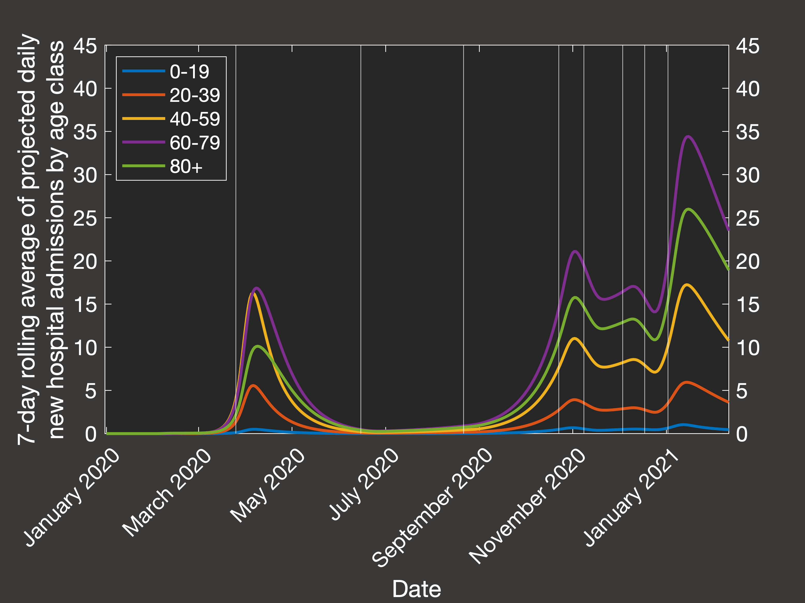

A summary of this work was presented as an online poster at the 8th International Conference on Infectious Disease Dynamics, and it has been published in the Journal of the Royal Society Interface.
The original approach when the pandemic began was to
adapt the patch-based spatial modelling paradigm from our previous work in ecological modelling.
To do this, we split Great Britain into Scotland, Wales, and the seven NHS regions of England,
and further subdivided the populations of each into two categories - regular and "vulnerable", which
was approximated by the fraction of the local population aged over 60.
Once the relative population density of each region was accounted for, we were able
to obtain broadly reasonable overall predictions for deaths in each region.
However, it turned out that this was being achieved mainly by assuming extremely high degrees
of spread in the less-vulnerable population, which is clearly not what was happening in reality.
Fixing this was likely to require fitting our outputs by this age- or vulnerability-class.
Furthermore, it was very far from obvious how we should model the relative rates of infection within
a region, between adjacent regions, or between non-adjacent regions. Given the means of travel available
in the modern world, it might be more sensible to look at probabilistic functions used in colonisation-extinction
patch dynamic models in landscape ecology, rather than a coupled ODE model (which might be more
suitable at certain scales for historic contexts).
As a result, and following numerous conversations both internally and with partners at Ulster University
(where, at the time there seemed to be a possibility of developing circuit breaker lockdown recommendations
for the Department of Health and the executive - there was a meeting in late 2020 to discuss possible collaborations
but nothing came of it), I decided to essentially restart development on this project with a different focus in mind:
|
|
In this compartmental modelling framework, the population is subdivided into five 20-year age classes,
and for each age class i, that invariant sub-population is further broken down into 8 compartments:
Describing the rates at which each of these compartments change leaves you with a system of 40 coupled ODEs that we can solve numerically (just using the Euler method, or RK4) in MATLAB. |
The main problem with this kind of system is that you can end up with a very large number of parameters.
We tried to fix as many aspects as possible, which became easier as 2021 progressed and more and more
reliable meta-reviews of clinical studies were published, and ultimately the parameter(s)
that will need to be learned by simulation relate to the transmission rate.
This is not something that can be as easily observed in clinical settings, compared to
the length of the symptomatic period for example, and it can change dependent on the viral variant, the age of
the individual, whether or not they have symptoms, whether or not the self-isolate, whether they are indoors or outdoors,
how many people they share a household with, mask use, the degree of social distancing etc.
Many of these factors changed significantly over the course of the pandemic according to national and local
government policy - primarily lockdowns, school closures, and working from home. So a set of parameters will need to be determined
to represent this and it will need to change in time, and possibly for different age groups or sections of society.
To achieve this, we obtained relative weightings of the transmission between age-classes using an
empirical data set
of contact matrices for different settings (home, workplace, school, and other) in the UK and Ireland,
and condensed and combined them to match the age-structure here. Because
this data lacked any estimates for contacts to and from those aged 80+, this had to be extrapolated from the behaviour
of the 75-80's and scaled up to account for increased contact in care home settings - without this scaling the model
severely under-predicted case numbers and hence hospitalisations and deaths in this crucial age group.
The simulation period (January 2020 to March 2021) was divided into nine distinct time intervals based on key policy
decision dates in the UK and specifically in Northern Ireland, and certain contacts were switched on or off during these
intervals - so for example, the school contact matrix is switched off during lockdowns and school holidays. Roughly
speaking then, the parameters to be learned are: the global transmission rate during each of the nine intervals, the
day (in January) and age-class of the initial infection (for simplicity, we will assume there is only one kicking things off),
the scaling of extra contacts for the over-80's, and finally the extent to which the work and other contact matrices are reduced in post-pandemic life.
Testing a range of each of these, and fitting the predicted outputs to the 7-day rolling average of
daily hospital admissions in each age class,
we end up with the following best fit simulation (Figure 2(a) shows the actual data from the Department of Health, and Figure 2(b) shows our simulation):
|
|

|
Then looking at the resulting predictions of the total numbers in hospital, in ICU and cumulative mortality over the same period (Figure 3(a) shows the actual data, while Figure 3(b) shows the clinical outcomes predicted by our best-fit simulation):
|
|
|
Now, the general public has heard a lot about the R0 number (the basic reproduction number) of the virus, but as epidemiologists have highlighted in the literature, as this technically only applies at the very beginning of the outbreak where there is precisely one infectious individual in the population and you ask how many new infections will occur in the first generation after them, the actually relevant quantity to calculate is the effective reproductive number Rt. For an age-structured model, this can be achieved using the next-generation matrix method, and then we can ask questions about how Rt would have behaved, dependent on the number of immune or vaccinated people in the population at different points in the pandemic. Considering the average transmission rate in Spring 2020 (Figure 4(a)) and Autumn 2020 - Spring 2021 when lockdowns were not occuring (Figure 4(b)), we would require we would require 80.4% or 42% respectively of the population to be immune to lower the spread such that the reproduction number is less than one and the virus does not grow:
|
|
|
Now, all of the above has just been about trying to reproduce the behaviour of the virus in the Northern Irish population, and then make some
simple inferences from that information. The useful applications then come from hypothetical questions that can be asked using this simulation
as a baseline. One of the motivations of the original spatial network approach was that we would have been able to implement different rulesets
for triggering local lockdowns. While this is no longer an option, we can consider triggering interventions according to some mechanistic rule
based on an observable, recordable clinicial property such as the number of hospital occupants with the virus, or the number of daily deaths (in reality these
could be estimated at the time simply by the excess of these values over the usual averages if the means of diagnosis are insufficiently rapid or reliable).
The challenge with this kind of investigation is not coming up with interesting rules, or implementing them, it's that there is a very wide variety of
permutations to the model and the severity, duration, and timing of the lockdowns that systematically accounting for all of the reasonable
configurations will require a significant quantity of simulations and analysis, and so you try to eliminate as many redundant options as you can.
Broadly speaking, it turns out to not matter too much if you use the hospital occupancy, ICU occupancy, or daily deaths as the quantity which triggers
lockdowns so long as you adjust your scale accordingly. However, what is important is that so far we have treated Northern Ireland as as isolated system:
there was one initial infection in January 2020, and from then on there was no input from the rest of the world. Now, that is fine as we assume that once COVID is in
the country, then most transmission will occur within the community and further cases directly due to imports are negligible (it's entirely possible that this is
actually not true, but it seems like a pretty reasonable assumption, which is a necessary evil in modelling of such imperfect systems of human behaviour).
However, this can now become a problem if our hypothetical lockdowns are able to completely eradicate COVID within Northern Ireland, as in such a case
(which is likely to be selected by our program as an optimal solution) the model is specifically behaving in an unrealistic fashion because of the lack
of new cases arising from outside the country (or simply from the fact that real life is unlikely to be so perfectly controllable).
Hence we will simulate the activation of lockdowns using the number of hospital occupants as the trigger,
and we consider the following permutations of the model:
|
|
|
In Figure 5 above, we can see an overview of the total number of deaths over a 2000-day simulation from January 1st 2020 in systems where we only allow a single lockdown.
Figure 5(a) illustrates the scenario when there is a constant inflow of one new daily case, while Figure 5(b) is for the closed system.
As we can see from the differing scales, the constant inflow system does experience a greater number of deaths in all cases - both because the lockdown is
less effective at containing spread, and because herd immunity can never be truly achieved given that we continue to artificially add nearly 2000 additional cases
until the termination of the simulation. In this more realistic scenario (excluding, of course, the role of vaccination), the effectiveness of lockdowns is
quite straightforward - the stronger the better, noting that the weakest lockdown is so ineffective that it has essentially no positive impact. Unlike the closed system,
it is also clearer how ot time the lockdown to minimise deaths - given that we are restricted to one shot at an intervention, we want to leave it as long as possible
within the parameter space that was tested.
For closed systems, eventually the population will achieve herd immunity and the virus will not be able to spread - so essentially the role of a single lockdown in these
scenarios is to time it such that the peak is cut off, and we achieve the minimal overflow over the threshold for herd immunity without unnecessary excess spread of the virus and hence additional deaths.
The optimal timing of lockdowns is a bit more interesting in a closed system, so let's examine what happens when we are allowed as many high-strength lockdowns as we require:
|
|
|
|